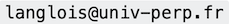

Bienvenu en Prog Python!#
Ce support est en évolution tout au long du semestre.
Mis à jour : Sep 24, 2024, lecture : 3 minutes minimum, PhL.
Vous : M1 CHPS
Moi : Philippe Langlois
Comment me contacter : 
Comment me rencontrer : sur RDV DEMANDÉ PAR E-MAIL
Où me rencontrer : au bâtiment B, étage 1, à gauche (laboratoire DALI).
Ce support regroupe les ressources de la partie Python de l’UE Programmation du semestre 1 en complément de l’espace moodle de cette UE.
Important
Dates importantes et contrôle des connaissances.
Section modifiée le 11.09.2024.
Les numéros des semaines sont celles du calendrier.
semaine 37. Démarrage : on y va
semaine 43. CC en temps limité (3h) 25 octobre 2024, 10h-13h
Le CT porte sur la partie C.
Note finale partie Python : \(0.5 \times (CC+CT)\)
Travailler en python#
Il est indispensable :
d’avoir accès à un environnement de programmation python, si possible assez complet,
d’avoir son propre ordinateur configuré de façon complète et selon vos préférences.
Il y a 3 choix d’OS possibles : windows, linux et mac os ; les 2 premiers étant disponibles sur les ordinateurs de l’UPVD. Les distributions python sont assez variées, et peuvent différer selon les OS. Cependant nous décrirons une solution aussi générique que possible.
De quoi a-t-on absolument besoin ?
Ce qui suit est une liste minimale de composants utiles ce deux années Elle peut sembler longue, mais en pratique ces composants “arrivent” d’un seul coup avec une distribution – cf. paragraphe suivant.
pythonversion**3.11**ou supérieuresl’
IDLEpython 3éditeur, interpréteur, débugger
Jupyter Lable successeur dejupyter notebookpour intégrer dans un unique fichier du texte, des maths (\(\LaTeX\)) et du code python qui s’exécute, les résultats de ces éxecutions (valeurs, courbes, images, …) et exporter tout ça en
htmloupdfou enslidetrès utile pour les exercices
utilisé pour les TP de programmation
utilisable dans toutes les matières ou presque
les gestionnaire de paquets (modules) python pour compléter et mettre à jour son environnement
conda: plus complet si distribution anaconda utilisée (solution recommandée)pip: autre gestionnaire classiqueExemple d’utilisation :
conda:conda list,conda install le_module_que_je_veuxet voilà, c’est fini !pip: pareillist,update,install
les modules indispensables
numpy: fournit des vrais tableaux multi-dimentionnels et des tas de fonctions et types numériques pour effectuer du calculmatplotlib: pour le traitement graphique de données, et en particulier :matplotlib.pyplotpour des affichages élaborésmatplotlib.imagepour le traitement d’images
tkinter: pour réaliser des interfaces graphiques
un module utile
scipy: scientific python qui rassemble des modules de calcul scientifiques (dontnumpy)
Pièges
Ne pas confondre
python 2etpython 3
Conseil
Choisir une distribution la plus complète possible dès le début.
Comment s’y prendre
Tel est l’objet de ce document
Programme de travail#
CM#
Séance 1
types de données et structures de contrôle de base
fonctions, modules
ES de base
Séance 2
types de données avancés
sous-programmes et affectations : aspects avancés
ES avancées
Séance 3
numpy, sesndarray,scypi: structures de données et traitements de calcul scientifiquematplotlib: courbes et graphiquestime: mesure de temps d’exécution
Semaine 37#
Motto : “Pratiquer, pratiquer, pratiquer !”
Exercices intégrés au chapitre 1
Chapitres 1 à 4
Préparation semaine suivante :
Compétences : Savoir faire et pré-requis technique
TP : installer l’environnement python et JupyterLab sur sa machine personnelle, savoir utiliser ces ressources sur les ordinateurs de l’UPVD (Feuille 0)
Semaine 38#
Motto : Ecrire une fonction dans l’ordre suivant.
spécification avec annotations de types
appels sur premiers tests unitaires avec des
assertcorps de la fonction
vérification des tests unitaires
Chapitres 5, 6 et 7
TP feuille 1
Semaine 39#
Motto : Limiter les import aux ressources effectivement utilisées
Chapitres 8 (
matplotlib,time) et 10 (numpy).TP feuille 2 : algorithme KNN et Choixpeau magique de Poudlard
Semaine 40#
Motto : les assert pour vos tests unitaires
TP feuille 3 : enveloppe convexe de \(n\) points du plan
Semaine 41#
Motto : valider ses traitements avec des cas extrêmes
Contrôle continu de 3 heures